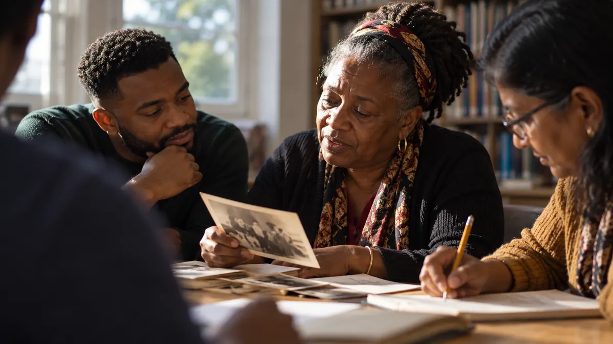
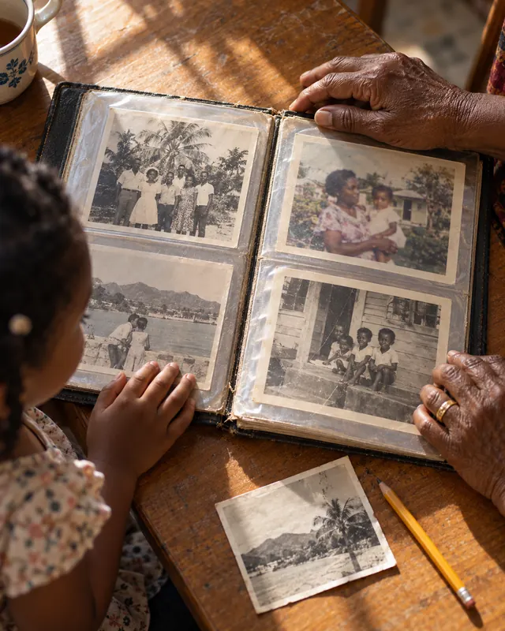

Jamaica
Parish registers from 1664, civil registration from 1878, and our largest sub-group to help you read them.
We are a volunteer group based at Solihull Core Library, helping people research ancestors from Jamaica, Barbados, St Kitts and Nevis, Trinidad, Montserrat and across the Caribbean. Beginners and researchers with forty years behind them share the same table.
The Caribbean Family History Group is a group of volunteers who enjoy genealogy and share what they learn. Some of us have been researching for over forty years, some for a few months.
We started in Solihull and Birmingham. Since the pandemic, members also join from across the UK, the USA, Jamaica and Trinidad. We help each other read the records, find the right archive and keep going when a line goes quiet.
About the groupParish registers, slave registers, civil records and archives vary from island to island. Start with the one your family came from.
Parish registers from 1664, civil registration from 1878, and our largest sub-group to help you read them.

Some of the oldest parish registers in the Caribbean, and a sub-group that works through them together.

Two islands with separate archives. Our sub-group helps you work out which records you need.

Spanish, French and British records side by side, and the records of indentured workers from India.

A small island with a large diaspora. Read how one member traced her family from Montserrat back to Africa.

We meet on the last Saturday of the month, except May, August and December, in the first-floor computer room at Solihull Core Library and on Zoom. Bring a name, a date or a photograph and someone will help you take the next step.
Our guides come from questions members have asked at meetings. Read one before you start, or bring it with you.

A baptism entry, a ship’s list, a photograph with a name on the back. Members’ finds become talks, exhibition panels and stories on this site, and they often help someone else break through.
Share a record or storyMonthly meetings follow a set pattern, so you can plan ahead. Sub-group dates, talks and exhibitions are added as they are confirmed.
Full calendarSaturday, 10am to 1pm. Solihull Core Library and on Zoom
Saturday, 10am to 1pm. Solihull Core Library and on Zoom
Saturday, 10am to 1pm. Solihull Core Library and on Zoom
May 2027, date to be confirmed
Solihull Core Library and on Zoom
June 2027, date to be confirmed
Venue to be announced
Your membership keeps the group running: Zoom, exhibition materials, speakers’ expenses and our place in the Family History Federation, which also handles our membership payments.
Committee roles open at the AGM each May. Anyone who has been with us for six months can stand. See the roles

In 2011, at the group’s request, Solihull Central Library became a FamilySearch affiliate. Here is how that happened and what it means for your research.